01
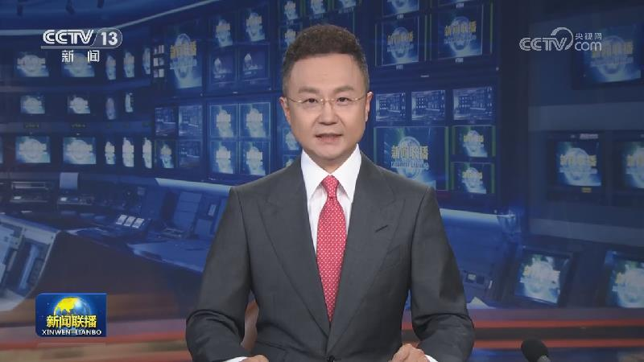
习近平离京对美国进行国事访问
9月23日下午，国家主席习近平乘专机离开北京，应美国总统特朗普邀请，对美国进行国事访问。


9月23日下午，国家主席习近平乘专机离开北京，应美国总统特朗普邀请，对美国进行国事访问。
9月22日，国家主席习近平向第48届世界技能大赛致贺信。习近平指出，当前，新一轮科技革命和产业变革加速突破，给全球技能发展带来深刻影响。世界技能大赛紧密对接产业需求，为各国技能人才精进技艺、互学互鉴搭建了有益平台。
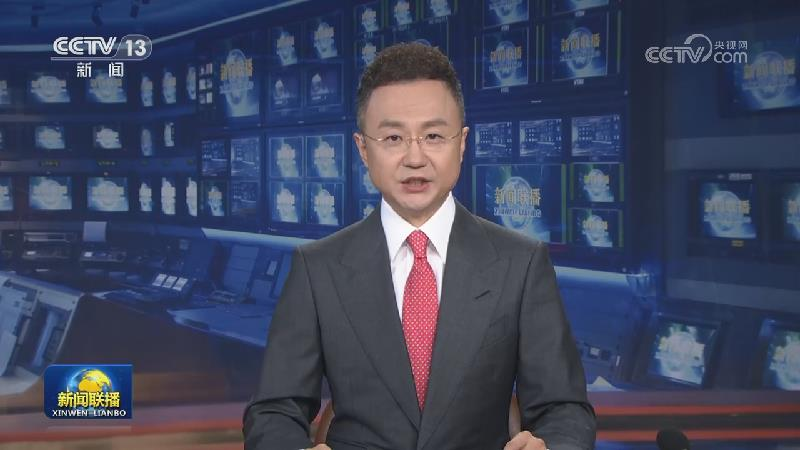
本台今天（9月23日）播发央视快评《鼓励引导更多劳动者特别是青年人走技能成才之路》。
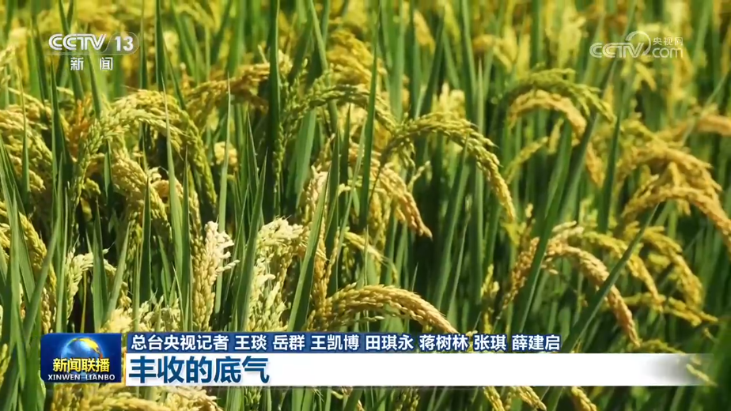
在第九个“中国农民丰收节”到来之际，习近平总书记向全国广大农民和工作在“三农”战线上的同志们致以节日祝贺和诚挚问候，强调扎实推进乡村全面振兴，努力让广大农民生活更加幸福美好。总书记的勉励和嘱托引发热烈反响。大家表示，将辛勤劳作，不懈奋斗，扎实推进乡村全面振兴。
第48届世界技能大赛22日晚在上海隆重开幕。开幕式上宣读了国家主席习近平的贺信。国务院总理李强出席开幕式并宣布开幕。
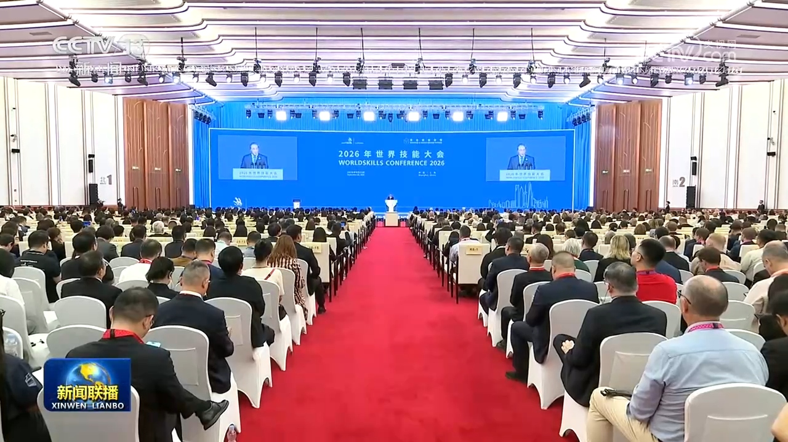
国务院总理李强23日在上海出席2026年世界技能大会开幕式并致辞。李强表示，习近平主席在致第48届世界技能大赛的贺信中，充分肯定了大赛对全球技能交流合作的平台作用，阐明了中国支持世界技能运动发展的鲜明态度。本次大会以“技能照亮前程”为主题，契合时代发展脉搏。我结合中国实践谈几点体会。
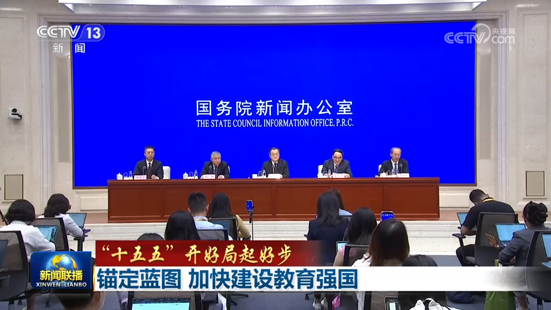
国务院新闻办今天（9月23日）举行“开局起步‘十五五’”系列主题新闻发布会，教育部相关负责人介绍贯彻落实“十五五”规划，加快推进教育强国建设有关情况。
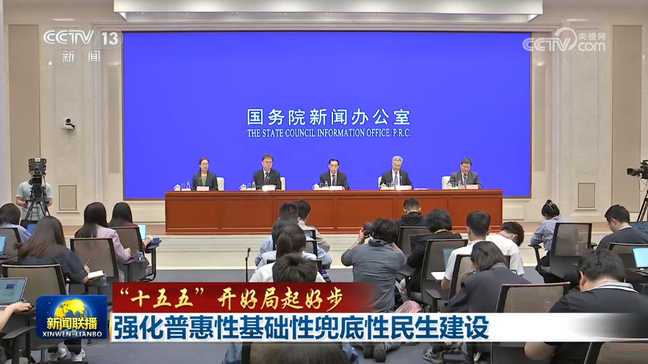
国务院新闻办今天（9月23日）举行“开局起步‘十五五’”系列主题新闻发布会，民政部相关负责人介绍“十五五”时期民政事业高质量发展有关情况。
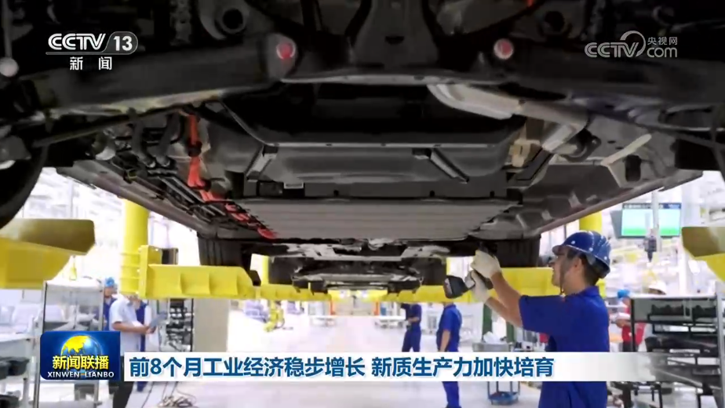
国家税务总局发布的最新发票数据显示，今年前8个月，工业经济稳中有进，全国工业销售收入同比增长7.3%，其中采矿业、制造业、电力热力燃气及水生产和供应业销售收入均保持较快增长态势。装备制造业持续发挥“压舱石”作用，销售收入同比增长10.1%。
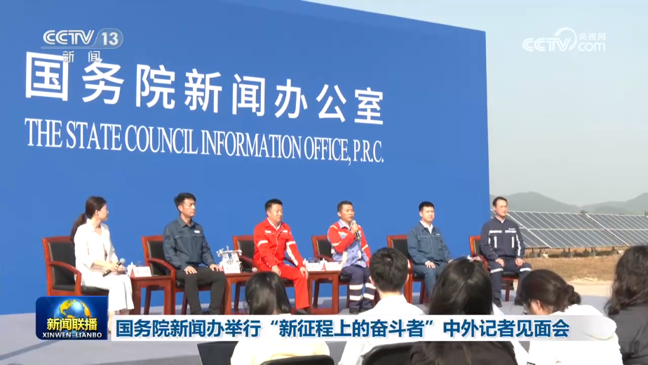
国务院新闻办公室今天（9月23日）举行“新征程上的奋斗者”中外记者见面会，5位能源领域基层一线代表围绕“促进能源供应保障与绿色转型”这一主题，分享了在各自领域攻坚克难、自主创新的亲身经历和动人故事，生动展现了新时代能源人保障能源安全、推进绿色低碳转型、建设能源强国的使命担当。
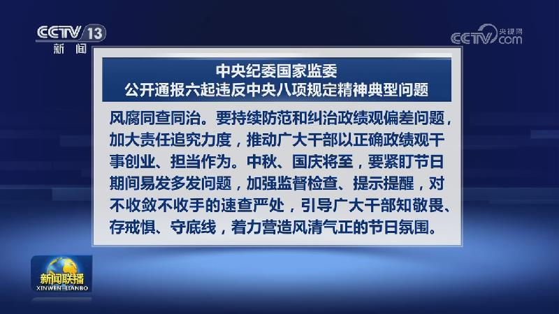
日前，中央纪委国家监委对6起违反中央八项规定精神典型问题进行公开通报。国务院国资委原副部长级干部潘良，贵州省黔南州原副州长、福泉市委原书记黄桂林，新疆维吾尔自治区地质局原党组副书记、副局长孙新春，山西省临汾市霍州市人大常委会原党组书记、主任，霍州经济技术开发区原党工委书记、管委会主任张伟兴，云南省西双版纳傣族自治州勐海县政府党组成员、副县长余俊锋，鞍钢集团有限公司审计部副总经理、审计中心主任李根……
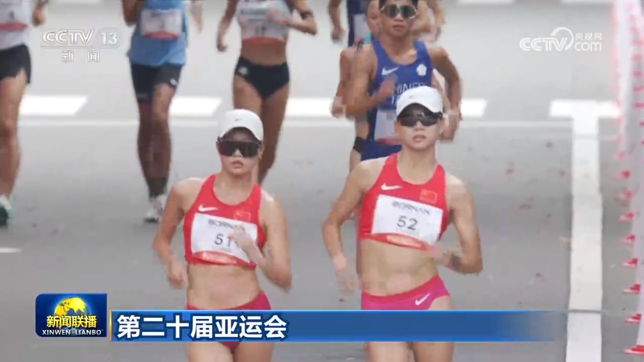
第二十届亚运会继续进行，田径比赛今天（9月23日）开赛，石升吉、杨柳静分获男子、女子半程马拉松竞走冠军。
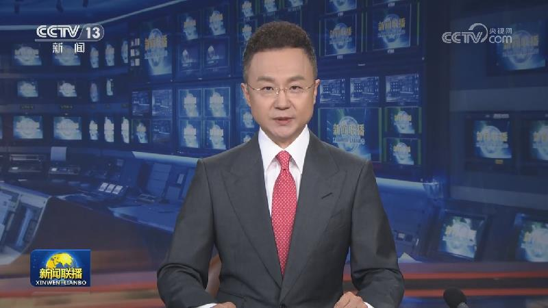
日前，中共中央决定：李乐成同志任安徽省委委员、常委、书记，梁言顺同志不再担任安徽省委书记、常委、委员职务。
前8个月熊猫债券累计发行已超2000亿元
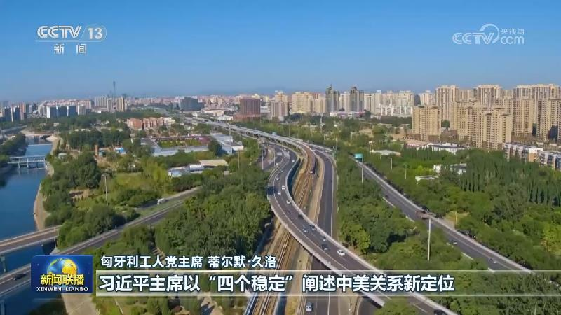
国际社会高度关注习近平主席即将对美国进行国事访问，期待此次中美元首会晤增进双方互信、扩大利益交汇点，更好地造福两国并惠及世界。
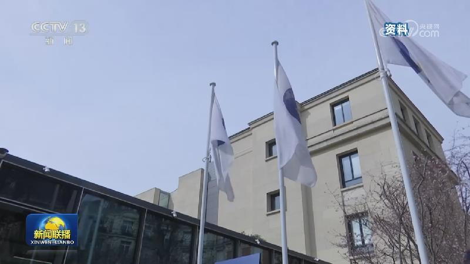
第81届联合国大会一般性辩论开幕
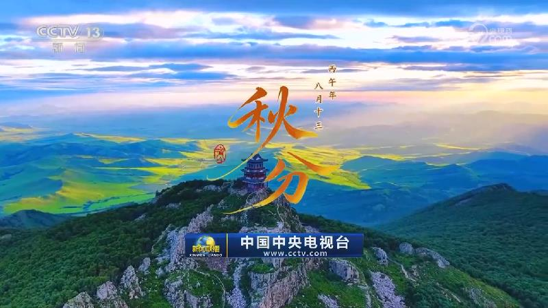
秋分是秋季的第四个节气，也是中国农民丰收节。节目的最后，我们一起感受秋分的自然之美和文化之韵。